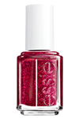
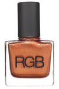
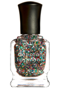
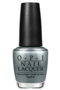
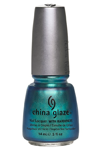

|  |
EssieToday the Essie manicure is synonymous with quality and style all over the world, but did ysou know the history behind this famous beauty brand? Believe it or not, this world famous nail polish range began life in Las Vegas as a collection of just 12 shades. Find out about the vision of the woman who created it; how the brand grew to over 200 fashionable shades today. All the nail polish is the creation of Essie Weingarten, who had a successful career as a fashion buyer but dreamt of following her passion for beauty and in particular, glamorous nails. In the early 1980s, nail salons offered very few choices as far as working women were concerned. When having beautiful hands mattered, there simply weren't the wide range of fashionable shades we all enjoy today. Weingarten created 12 new chip-resistant colours and began selling them to Las Vegas hotel nail salons. The Essie manicure was an instant hit. |
|  |
RGBRGB launched in 2009 with the RGB Ten collection : ten iconic colors with a modern edge. Each shade was RGB’s sharp take on a classic with a straightforward name to match. RGB curates color for you. Staying true to the well-edited launch, RGB introduces new shades for every collection, and pulls from timeless archived colors of collections’ past to complete a new library of color each season. RGB’s formula removes harmful carcinogens often found in nail color. The chip-resistant and high shine Five Free Formula contains no Formaldehyde, Toluene, DBP (dibutyl phthalate), Formaldehyde Resin, or Camphor. All RGB products are cruelty free and made in the USA. |
|  |
Deborah LippmannLippmann Collection nail polish was created by Deborah Lippmann, a celebrity manicurist and accomplished jazz singer who has worked with a roster of top names, including Sarah Jessica Parker, Mary J. Blige, Renee Zellweger, and Gwyneth Paltrow to name a few. She launched the Lippmann Collection in 1999 as a way to incorporate her love for music and nail design. Deborah Lippmann Nail Lacquer - Across the Universe is a gorgeous strengthening polish. Its emerald, sapphire and black glitter shades are sure to make a statement. This lacquer is chip resistant for long lasting wear and works overtime to protect your nail enamel. |
|  |
OPIA family-owned company committed to the highest quality products and to our customers’ well-being, OPI has long been a leader in the community and within the Professional Beauty Industry. Quite simply, we are dedicated to excellence. OPI was founded in 1981 by President & CEO George Schaeffer, who immigrated to the U.S. as a child from post-World War II Eastern Europe. OPI continues to be family-owned, with Schaeffer and Suzi Weiss-Fischmann, Executive VP & Artistic Director, at the helm, and has grown to become the world leader in professional nail care. With this position comes responsibility, and OPI has always been committed to providing our customers with the finest quality in products and services. |
|  |
China GlazeFor over 13 years, China Glaze has exceeded the bar set by the professional nail care industry. We are dedicated to providing the highest quality of globally rich, on-trend, innovative colour lacquers and treatments. Our colours provide the perfect accent to any individual style. From our neons, to reds, corals, to shades of blue, our colours' inspiration is found on the shores of Tahiti, the nightlife in New York City, and beauty within every woman. Our unique lacquers contain China Clay as a nail hardener, the same material that gives porcelain its shiny finish. These glossy lacquers work in perfect cohesion with our professional nail treatments for lasting strength, durability and overall gorgeous nails. Need stronger, longer nails? Try our Nail Strengthener and Growth Formula. |
Special Nail PolishesSolid colors are so last year! Take a look these awesome and creative special nail polishes, click here. |